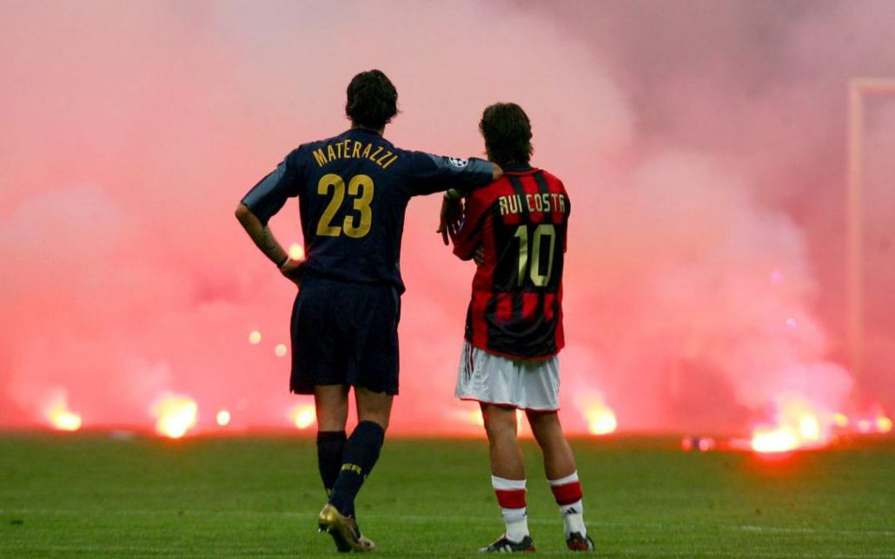

sold out il derby di milano
Milan che dopo la sconfitta di Udine ha vinto due partite consecutive ma finora non ha mai convinto sul piano del gioco. Contro il Verona domenica scorsa in particolare è stato molto deludente: ha affrontano per quasi tutta la partita una squadra rimasta in dieci per l’espulsione di Stepinski, ma non è mai riuscita a sorprenderla. La manovra è troppo prevedibile e il gioco offensivo ammirato quando Giampaolo allenava la Sampdoria finora non si è mai visto. Tutti i calciatori offensivi vogliono il pallone sui piedi e non attaccano la profondità: Calhanoglu, Paquetà, Castillejo. Solo Kessiè prova inserimenti senza palla, mentre Suso defilato a destra fa sempre gli stessi movimenti e dei cross che sono spesso preda dei difensori avversari. Giampaolo per migliorare la situazione dovrà probabilmente ricorrere in futuro ai nuovi arrivati Rebic e Leao, ma servirà del tempo e l’Inter in questo momento sembra avere più sicurezze.
Se è vero che contro lo Slavia Praga in Champions League ha deluso, l’Inter allo stesso tempo in campionato è al primo posto in campionato e in fase difensiva è stata quasi sempre impeccabile. C’è da migliorare il gioco offensivo e i rifornimenti per Lukaku apparso fin qui troppo lento e macchinoso.
il pronostico del veggente prevede un probalile pareggio 2-2

VAI ALLA HOME PAGE